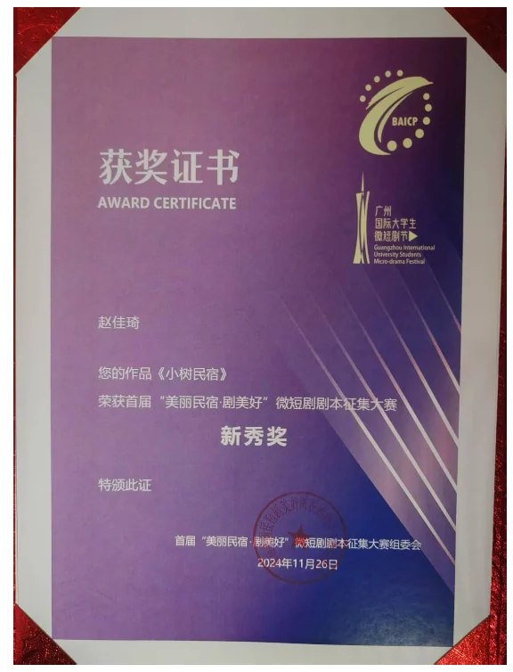

《小树民宿》
类型：奇幻、温情、治愈
故事梗概
主角小树在林子里的老房子开了一家民宿。五年前，小树的父母在车祸中身亡，他卖掉了城市里的房子，花重金修缮了老家的老房子，开了小树民宿。因为地处偏僻，生意一直不是特别好。一家公司组织
团建，抠门老板定了小树的民宿，就这样，小树的民宿迎来了一拨客人。原本和谐的状态因为突发事件被打破——大家发现院子外形成了一层屏障，所有的人都出不去了。这个时候小男孩小木发现了一个神秘盒子。众人决定不打开盒子，但没想到意外之下，盒子被打开，里面是一本书，和一颗种子。经过大家的解读发现，大家现在陷入了一个神秘任务中，只有把盒子里的种子成功种出一棵树，大家才能离开。
大家开始细心照顾树苗，详细按照书上步骤，但树苗却突然停止生长。后小树发现想要树苗生长需要结合民宿里每个人的特长——妙妙阿姨唱歌、王叔叔在树上画画写字、馨馨为树吹口琴、大强给树裹上厚衣服。几经努力和磨砺，树苗以非自然状态疯长，最后关头小树成功让树苗戳破屏障。
突破屏障的同时周围陷入白色，小树从病床上醒过来。原来五年前出车祸的是小树本人，他在床上整整睡了五年，医生通知家属说小树的大脑正一点点失活，近期如果继续恶化就会永远醒不过来了。小树的父母（对应周妙和王志刚），女朋友（馨馨），隔壁床的病人家属（周大强）每天和小树说话、唱歌等方式刺激他。唤醒现实世界的小树是大家努力的结果。民宿里的树苗长大了，戳破了现实世界与梦境的屏障，医院的小树在所爱之人的共同努力下醒了。
创作阐述
《小树民宿》是一部融合现实与奇幻、情感与哲理的微短剧作品。其创作初衷源于对失去与重生、孤独与连接的思考。故事通过一场突如其来的屏障事件，将一群陌生人困于深山民宿中，迫使他们共同完成一项看似荒诞的任务——种出一棵树。最终，这棵树不仅打破了物理的屏障，也唤醒了现实中沉睡五年的主人公小树。本剧的核心主题为“爱是穿越现实的种子，陪伴是唤醒生命的阳光。”故事探讨了人在极端孤独与创伤中如何被爱与陪伴拯救，如何通过“共同成长”找回自我。每个梦境角色都对应现实中的一个真实陪伴者，形成双重身份镜像。这种结构既增强了剧情的悬疑感，也在最后一集中制造了强烈的情感反转。
获奖证书

人物小传
王树青：代号小树，小树民宿的老板；27 岁；为人开朗热情，父母
事故以后变得敏感，把自己封闭在老房子里，不愿意接触外界，不过
依旧是一个热心的且有领袖感的人。
王志刚（王叔叔）：50 岁；和周妙是夫妻关系，公司的经理，为人正直有一定的领导力，对很多事物有自己独到的见解。
周妙（周阿姨）：49 岁；音乐老师，和丈夫一起来体验团建。性格温柔，喜欢唱歌。
馨馨：27 岁；公司的文员。活泼开朗，爱说爱笑，乐于帮助别人。与小树之间有爱情的火花。会吹口琴。
周大强：30 岁；公司的司机；和周二强是兄弟关系，喜欢偷懒耍滑，耍赖。
周二强：26 岁；公司的保安；周大强的弟弟，有点傻乎乎的一根筋的感觉，本性不坏。
小木：村子里的孩子，爬到山上偷民宿院子里种的柿子吃，调皮好动，机灵，鬼主意多。
完整剧本
《小树民宿》
·第一集
【场景一：夏天；晴朗明媚的一天鸟语花香的森林；高大茂密的参天大树层层叠叠掩盖着，顺着曲径小路，踏过层层石阶，密林的深处是一座精致清新的二层小楼，小楼前有一个小院子，院子里有支的桌子和藤椅，院子里一边种着蔬菜，另一边种的是各色的鲜花。小院的大门上挂着一个木制牌匾（小树民宿）
【王树青在院子里的花地里侍弄花草，正在刨土，突然听见菜地那边有窸窸窣窣的声音，静静悄悄地绕过去，发现是山脚村子里的小孩小木正在偷吃西红柿，小木正专心在吃，突然感觉有阴影笼罩过来，回头一看是王树青（小树）
小树：好小子，今天被我抓到了吧！
小木：小树哥，我就尝尝。（嬉皮笑脸的）
小树：（严厉地说）把手伸过来
【小木以为小树会打他的手，颤颤巍巍的伸出来。小树从兜里掏出纸巾擦干净小木的嘴再擦了他的手
小树：告诉你呀，吃归吃，可不许踩了我的菜！不然我就告诉你奶奶。
【小木嬉皮笑脸地做鬼脸
小木：小树哥最好了，你才不会呢。
小树：去玩吧。
【小树继续侍弄花草，笑着看着小木和小狗（大黄）在院子里嬉闹。柔柔的阳光透过层层叶子倾泻在民宿的屋顶，仿佛镀上了一层金色的光芒，小树很满意这里，发自内心地漏出微笑
小树（心声）：我叫王树清，大家都叫我小树，是这家民宿的老板。好多人都很纳闷，这深山老林里开这家民宿不就是赔钱吗？说实话，我没想过这个，我只是想守住这里和这里保留的回忆。五年前的七月十六，是我噩梦的一天——
【小树陷入回忆
【场景二：夏天；一辆轿车里；小树与父母正在欢快地交流，全家人处于一个愉快轻松的氛围
树爸：今天，我们的小树就二十二岁啦，有什么生日愿望吗？
小树：嗯，我想咱们——
树妈：先别说，等一会吹蜡烛偷偷说，说出来就该不灵了！
小树：哈哈哈好！
树爸：还有半个小时咱们就到奶奶家了，奶奶做了你最爱吃的西红柿牛腩汤。
小树：好呀，我记得我小时候，奶奶知道我爱吃这个，一连做了一周，给我吃的一看到西红柿就哭。
树妈：奶奶可想你嘞。
小树：诶爸妈我总在想咱们以前在小屋的生活，真是太惬意了。我就在想等我老了，我也去山头盖个小屋，种种地，养养鸡。
树爸：这孩子，才多大岁数呀，连老了的事儿都想好了。
小树：这两天我总能梦到小时候，咱们一家坐在院子里吃晚饭的场景。
【小树刚说完这句话，突然飘过来一个垃圾袋遮住爸爸视线，树爸猛打方向盘，听到路面上撕拉一声，车撞在马路边翻了过去
【小树迷迷糊糊地睁眼，看见有人过来，用手敲着车。小树看到爸妈都晕死过去，树妈额头在流血，爸爸也倒在一边，小树想用力但很痛苦地喊
小树：爸，妈。
【想用手去拍他们，但自己却动不了
小树：啊，救命啊，快救救他们。
【小树虚弱地说，然后昏死过去
·第二集
【场景三：在殡仪馆大门口，小树周围簇拥着他的朋友亲戚们；小树身上打着绷带，头上也用纱布包着，看起来很虚弱，脸色铁青地抱着骨灰盒，怔怔地一直往前走
张姨：（一边擦眼泪一边小声地和边上的孙叔叔说说）这孩子也太惨了，他奶奶听到车祸消息以后一下子受不了，也走了，好好地一家子就这么散了。
【张姨突然注意到小树继续往前走
张姨（邻居）：树啊，你要去哪啊？
【小树不吭声，还继续走，悲伤让他仿佛一下子失去了灵魂】张成（男）：兄弟，你怎么了这是。
孙叔叔：别吓大家呀孩子。
【小树转身冲大家鞠了一躬，眼泪在鞠躬的一瞬间砸落在地上】
小树：谢谢大家来帮忙，我要带爸爸妈妈和奶奶回家，回老房子。
【小树转身默默离开，消失在大家视线
【场景四：小树站在老房子屋门口，向屋子里看，房子温馨但稍显破旧，小树走进去，开始收拾屋子里的东西，重新布置了房子
小树（心声）：后来，我把家里在城里的房子卖了，把全部的钱都用来重新装修这个山上的老房子，就想着一辈子都不想下山了，就这样一直一直生活在过去，就好像他们只是出远门了，没多久就会回来的。于是就有了这家民宿，小树民宿。（此时画面中的房子已经布置好了）这儿的生意一直都不怎么好，或者说是根本没有生意。没有人会跑这么远的山路到这来的，时间久了有时候倒希望真的能来几个人。
【小树从回忆中清醒过来，回到场景一正在种菜的时候，房间里突然传出滴滴当当的电话铃声，小树拍拍手上的泥，回房间
小树：【接电话】你好，哪位。
钱多多老板：诶，是小树民宿吧，订几间民宿可以吧，就下周末。便宜点啊。
【小树面带惊讶
【场景五：下午，大巴车开过山脚边的马路，停住；车上面写着：钱多多的多多钱公司；一行人（王志刚、50 岁、稳重可靠；周妙、48岁、温柔善解人意和王志刚是一家人；馨馨、25 岁、可爱活泼的女孩子；周大强、36 岁、喜欢偷懒耍滑暴躁贪婪、老板司机；周二强、 30 岁、做事一根筋有些呆傻、周大强的弟弟、公司保安）下车，看着面前的森林和山，寻找民宿的路线
馨馨：我看地图上显示还有三公里就到了，但是这个箭头指的方向是——这儿【馨馨原地转了一圈，随后吃惊地指着林子里
周大强：操他妈的！说的那么好听奖励优秀员工团建，结果给老子扔山上来了【像旁边吐一口痰】怪不得都说有事儿来不了，只有傻子才会来这儿。
周二强：哥，你也是吗
周大强：是什么？
周二强：只有傻子在这儿，你也是傻子吗？
周大强：我是个屁！（生气的骂）
周二强：哦，原来你是个屁。
王志刚：行了，赶紧找找哪有路能上山吧，天马上就黑了。
周妙：是啊是啊。
【小树从山上的小路钻出来，走向众人
小树：各位是多多钱公司的吗？跟我来，民宿就在山上。
【场景六：一行人在山上小路费力穿梭，山路陡峭不好走，只能在林中的小路穿梭，树杈经常划到身上，一不留神还会闪到脚】
王志刚：来，把手给我【冲周妙阿姨伸手】
周妙：诶，好。小树呀还要多久才到。
小树：阿姨，我们马上就到了。
馨馨：什么东西【馨馨一下子踩空】
【小树一闪身伸胳膊一把抓住了要摔倒的馨馨】馨馨：小心！
【小树自己重重摔在地上】
小树：你没事吧【望着馨馨吃力地说】
馨馨：我没事没事，你怎么样啊，太对不起了。
小树：就擦破点皮，小事儿。
馨馨：我扶你。
小树：（温柔、腼腆地笑笑）那就麻烦啦。
【馨馨为难地看了看自己的脚
【周大强瞄了一眼小树和馨馨，赶紧挤在馨馨的另一边
周大强：诶呀，我这个脚也疼啊。馨馨～你也扶扶我呗。
周二强：哥，你脚疼，我背你。
【周二强不容周大强反抗，强行把他背在背上
周大强：你是不是脑袋有病？谁用的着你啊，快放我下来。
周二强：哦。
【周二强直接松手，周大强摔了一个狗啃泥
周大强：诶呦
【周大强一下子蹦起来，一只手揉屁股，一只手拍在二强脑袋上】周大强：你傻啊。
周二强：恩
周大强：信不信我揍你（扬起手要打）
王志刚：大强啊，我看你这行动挺敏捷的啊，也不用人扶。
【周大强悻悻作罢，一伙人继续赶路
小树：我们到了（小树指向小路尽头）
【大家伙抬头看见小树民宿的招牌，和一个藏在密林深处与世隔绝的小院，温馨的黄色灯光照亮剩下的路，小院整体氛围是清新浪漫的，种着蔬菜瓜果，花花草草
·第四集
【场景七：黑天；院子里有一张长长的木头桌子，桌子上有新鲜的果盘，一拉开校园的灯整个小院就亮了起来，还有星星点点的闪烁的装饰灯，院子的一角有一个双人秋千
王志刚：采菊东篱下，悠然见南山，小伙子，你这小院真是做得不错。
小树：王叔，您过奖了。
周妙：诶，馨馨你快帮阿姨拍一张照片，就在这个花前面，把周围景色也照进去。
馨馨：阿姨你往左边移一下，诶好好，特别漂亮。
【周妙阿姨看了一下馨馨拍的照片
周妙：拍得太好看了！ （小树拿过手机）
小树：你站过去，我帮你也照一张吧。 （馨馨甜甜的镜头面前微笑，拍照）馨馨：这秋千是你自己扎的吗？
小树：是，我自己做的，要不要试试呀。
馨馨：那就麻烦啦
【馨馨坐在秋千上，示意小树来推她，小树接收到她的意思后，在背后轻轻推起秋千，周大强看到这一幕故意叫嚷开】
周大强：饿死了！管饭不，老板。这鸟不拉屎的地方去哪吃饭啊
【乌鸦飞过，啊啊啊啊，一坨鸟屎掉在周大强头上
周二强：哥，这地方鸟拉屎。
小树：大家伙先回房间稍作休息，一会开饭了我叫大家！这山上也没什么别的好吃的，不过我自己种的瓜果蔬菜管够！
王志刚： 自己种的才好呢，天然无公害呀！
周秒：孩子，阿姨和你一起！
小树：谢谢周姨。
馨馨：我也去帮忙！
【大家走进屋子里，周妙、小树和馨馨在厨房忙碌，周大强和周二强在院子里逗狗；王志刚在屋子里游览，看墙上的全家福挂画
小树：开饭啦！
【所有人都围坐在桌前，其乐融融地准备吃饭
王志刚：色香味俱全啊，看着就好吃，小树手艺可以呀！
小树：哪有啊，这都是周阿姨掌厨，我就打打下手啦。
周妙：好久不做饭了，也不知道好不好吃，大家快尝尝。
【周大强夹了一大筷子肉末茄子塞进嘴里，把嘴里塞得满满的
周大强：【含糊不清】好吃啊，香啊。
【周大强一边说一边饭粒就喷出来了
【众人被他滑稽的行为逗笑
小树：这么好吃吗
【小树夹一筷子，放进嘴里，细细咀嚼，突然表情凝住，默默咀嚼下咽，情绪突然变得低落
周妙：怎么不说话，是不好吃吗？（期待地看着小树）
小树（心理活动）：这个味道，好像啊
【小树恍惚间清醒过来
小树：不不，特别好吃，阿姨的手艺简直太好了，有妈妈的味道。
周妙：这孩子。（看向王志刚）
王志刚：当年啊，你们周阿姨就是靠这一手无敌的厨艺征服了我的胃，也征服了我的心。
周妙：这么多人，说这个，多难为情啊。【害羞】
馨馨：那做您的孩子也太幸福啦！天天都可以吃到这么好吃的菜。 【周妙和王志刚再次对视，眼神稍带悲伤】
周妙：我们俩福薄，儿子五年前就去世了，留在以前的地方生活太伤心了，就全家换个新环境工作。
馨馨：对不起，我不知道
【小树有些出神地望着王志刚和周阿姨
周妙：没事没事，阿姨理解。阿姨今天看大家伙吃得这么开心就心满意足了。
周大强：好吃好吃，这比咱们食堂好吃一万倍。
周二强：再来一碗！【伸手让小树帮忙盛饭，然后继续埋头苦吃（呆呆地】
·第五集
【场景七：黑天；众人还是坐在院子里，已经吃完饭了，在吃水果闲聊天】
王志刚：怎么想着在山上开这么一家民宿啊？
小树：没指望这儿能来多少客人，赚多少钱。这儿保留着我和爸爸妈妈过去的全部记忆，这儿就是我最重要的家，我怕，有一天我也不在了——就没有人知道这个地方了，那些美好的过去就真的永远的消失了。所以，我感谢每一位来到这儿的客人，你们都是我记忆的保存者，谢谢大家。
周妙：小树，你父母？
小树：五年前因为一场车祸去世了。
【周妙抱住小树的半侧胳膊】周妙：好孩子。
周大强:那你是准备这辈子都不下山了吗？
小树：不去了，我没有办法面对这个屋子以外的世界了。
周大强：生人唔生胆。
馨馨：你说什么呢？
小树：他说得没错，我就是不敢。
【大家陷入沉默，突然发出窸窸窣窣的声音】周大强：二傻，吃东西别吧唧嘴。
周二强：哥我没吃。
【大家再次不出声，观察周围，发现声音是从草丛里传出来的】
馨馨：啊，那是什么。
【周大强指向菜地的黄瓜架后面，黑夜中有一个黑影在迅速移动，窸窸窣窣发出声音，从地上滚过来一个咬了一口的西红柿】
周大强:是不是鬼啊。【害怕哆嗦】
周二强：哥你傻啊，哪有跪吃西红柿。
小树：大家别怕，这山上没有什么大型野兽。我去看看【小树打开手电筒，冲黑影走过去，恐怖的氛围】
周妙：小心啊。
【小树走了过去，静悄悄绕到黑影身后，黑影一转身看到一个红彤彤的嘴巴，再仔细一看，原来是山下的小木在院子里偷吃西红柿】
小树：小木？
【小木不好意思地嘿嘿笑起来，站在菜地里冲大家挥手打招呼】
王志刚：这小鬼头。
周二强：哥，这就是你说的鬼。 【小木冲周大强做一个鬼脸】
周大强：你这小兔崽子，别跑！
【一个番茄从枝上掉下来滚向栅栏边，小树顺着番茄方向追过去，发现番茄突然倾斜着以非自然的角度静止停在了院子围栏边，小树伸手去捡起来，却发现院子和外面世界形成一层泛着淡蓝色光的屏障，像蛋壳一样包裹住了小树民宿】
小树：大家伙，好像有点不对劲。
【众人顺着小树抬头的方向望过去】
.第六集：
【场景七；黑夜；众人在校园中遇到这个突发情况以后开始变得慌乱】 【小树用手推了一下这个浅蓝色屏障，发现纹丝不动；院子里的其他人也开始分散地去各个方位找出口】
【王志刚绕着整个屋子走了一圈，紧皱眉头；周妙阿姨拉着王志刚的胳膊】
周妙：这是怎么回事啊。【王志刚安慰地拍拍她的手，让她别急】
【馨馨快速跑到楼上，在二层伸出身子，把手机举的高高的，发现房子上面也有一层屏障】
馨馨：上面也有。而且电话一点信号都没有了。
【周二强冲屏障扔了一个石头，结果石头一下子反弹了过来砸在了周大强身上】
周大强：诶呀！二傻子！你要干嘛！疼死我了。
【小木想跑到菜地的里面看看可以出去吗，但是被一不小心绊倒了，他蹲下低头看地上的东西，在地上挖了起来，其他人没有注意到。
王志刚：小树，这是怎么回事。
【小树紧缩眉头】
小树：从来没有遇到过这种情况的。
周大强：你小子坑爹的吧，把我们框到这儿然后出不去了。你安的什么心？【上手抓住小树的领子】
小树：我没有，这从来没有这种情况。
周大强：少放屁，老子现在就要回家！
【周大强冲进厨房拿出一把菜刀，气势汹汹的走向众人，然后穿过众人，冲馨馨抛了一个媚眼】
周大强：馨馨，哥来拯救你了
【周大强走到围墙边开始砍，屏障纹丝不动。周大强砍了一身的汗，累的直大喘气】
周大强：老子不干了！你必须给个说法，又冲到小树面前。
馨馨：你干什么周大强？二强快把你哥拉回去。 【二强一把就把大强甩过去，坐在了地上】
周大强：你【要站起来】
【周二强在大强准备从地上站起来就按下去】周大强：你别【又要站起来】
【周二强认真严肃地看着哥哥】王志刚：要不试试用水泼一下。
【小树从缸里舀了一勺水泼了过去，水顺着屏障流在了地上】小树：没用的。
馨馨：我们要不然一块喊，看看能不能让周围村子人听到。
馨馨：救命啊——有人吗？
所有人扯嗓子喊：救命啊！
【大家坚持喊，周妙阿姨突然打断】周妙：你们看。
【一只小猫在屏障外往里看】
【周妙用手大力地拍屏障，小猫像听不见一样还是在外面走，屏障外的世界听不到他们的呼救】
周妙：这可怎么办啊。
【众人大喊过后疲惫地坐在椅子上，小树突然想起小木】
小树：诶小木呢？小木去哪了？
【大家四处望了一下】
周妙：那个是不是，蹲在地里呢。
【小树冲过去，为了验证是不是小木】
小树：小木，你蹲在这干吗？
【小木瞪着大眼睛看着小树，举起手里的盒子】
小木：哥哥你看，这个是什么？
【小树接过来盒子，冲着光看上面的字，皱起眉头来，这个盒子给他一种似曾相识的感觉】
小树（心理动态）：怎么感觉在哪里见过。
·第七集
【场景七；黑天；小院子里大家围坐在桌子旁，研究这个神秘的木头盒子，盒子上面有刻的精致的花纹，但是木盒的顶部有一个大大和红色的十字标志】
【周大强把脸贴在盒子上面，上面刻着两行英文】
周大强：这是个什么东西。o—p（噢，泼），e—n（额，恩），o—r （我，热）【周大强用读汉语拼音的方式读英文字母】
周二强：哥，热了就脱。读不明白还得硬读。
小树：拿给我看一下。
【小树拿来盒子，仔细看】
小树：Open or not open，that is your choice；Salvation lay within ；
周大强：这什么意思啊。
小树：打开还不打开是咱们的选择。下一句是——救赎之道，就在其中。
【众人盯着木盒】
周妙：所以咱们要打开吗。
馨馨：打开吧，至少上面说了救赎之道就在其中，打开了或许有办法出去。
王志刚：但是现在这个情况太特殊了，我们也没办法保证打开盒子就是解决办法，万一——
【王志刚突然哽住不说话】
小树：王叔你想说什么。
王志刚：小树你看盒子上有那么醒目的标志，我是担心万一这里头有什么脏东西怎么办？谁能保证这不是潘多拉的魔盒呢？现在已经出不去了，我们不能再给自己创造危险啊。
周妙：我同意老王的说法，这个东西什么来历我们都不知道，而且上面还画了一个那么大的叉。
周大强：什么意思，你们都不想出去是吧？好不容易有个线索结果你们怕这怕那？我告诉你们，我不怕，你现在就打开。【周大强指着小树说】
馨馨：大家都别说了，我也支持王叔的想法，还是再想想有没有别的方法能求救吧。
周大强：馨馨你是这么想的啊，那也行，今晚要是害怕可以来找我。
周二强：哥，刚才你吓的都要尿裤子了。
小树：好，那我们就再找找有没有出去的办法，大家别担心，院子里的吃的喝的还够吃上一段时间，今晚我就在院子守着，明天天亮了我们再看看情况。
【小木爬上凳子上，在大家说话的时候，想够到桌子上的盒子，一不小心把盒子摔在了凳子上，马上就要掉下去了，木盒在椅子上维持着脆弱的平衡】
小树：小木！别动，别动。
【大家注意到小木和盒子的情况，只有周大强是背对小木】
馨馨：大家都别动。
【离得近的馨馨准备用手把盒子拿起来】
周大强：咋回事儿啊。
【周大强猛地一转身，肥胖的身躯一下子就撞到了椅子，盒子砸在了地上，盒子被打开了】
【众人吃惊、害怕、紧张的看着打开的木盒；木盒冲影子方向打开，里面的东西正好覆盖在盒子的阴影里看不清是什么具体的，周围扑起一阵灰尘】
·第八集
【场景七；黑夜；盒子猛地一砸在地上，周大强躲进桌子底下；大家都忙得缩在离盒子较远的一个地方，大敌当前的感觉】
小树：我过去看看。
馨馨：我陪你去。
【小树冲馨馨点点头，两个人结伴走到盒子旁边】小树：好像是一本书。
【小树弯下腰小心翼翼的捡了起来，馨馨紧接着把盒子也捡了起来，发现盒子里还有一颗种子】
馨馨：这是？看起来像是一颗种子。
小树：大家别害怕，应该没有什么危险，都坐下吧。
周大强：小树你快看看书里写的什么？能不能出去啊。 【小树点点头在大家注视下打开了书】
小树：【读书上内容】恭喜你们，已经迈出了勇敢的第一步，这是一本通往真理的秘籍。你们现在一定很好奇为什么被屏障困住了，不好意思！这个问题，本书也没办法给一个明确的答案，这不在我的业务范围之内，想要投诉的话你可以联系我的老大，联系方式——算了，说了你们也找不到。总之你们现在要知道自己是被选中的幸运使者， （鬼知道到底哪里幸运了，偷偷背着老大说）只要完成任务，就会看到一个真实的世界，找到心中的真理。
【小树翻页】
小树：如果任务没有完成，你们将被困在这里，永永远远，直到所有人都忘记了你们的存在（嘻嘻，这是系统的强制爱）。总而言之，言而总之，能不能出去找到真理，就要靠在座的各位喽。
周大强：妈的！这是什么鬼东西啊。
小木：哥哥，那任务是什么啊。
小树：任务就是馨馨手上的种子，我们要把他种成一棵树。
众人：啊？
王志刚：这种子变大树，可需要不少时间啊，要一直困在这儿吗？
小树：这个书上说，只要照顾得当，种子将会以非自然状态逆天生长。
馨馨：怎么照顾。 【小树翻了翻页】
小树：没有细说，但是底下写了两个词：各有所长，共同进步。
周大强：哎哟，这都是什么事啊。
小树：大家伙现在就动起来吧，抓紧时间，今晚就把树种下去。
众人：好【周大强没吱声】
周大强：你们去吧，我给你们放风，万一有危险，我好保护大家。
周二强：哥，你想偷懒。
周大强：弟弟，哥哥在这种关键时刻还是很有大局观的——
周二强：哥，你想偷懒！【更大声】
周大强：你别喊了，我去去去。
【众人开始选择一片干净的土地，刨坑施肥，准备种树】
【场景七；黑夜；院子里；大家正在忙碌种树，周大强和二强在挖坑，馨馨和周阿姨在拔周围的草，小木在旁边坐着观察着种子，小木和王志刚在挑水，大家都各司其职的在忙碌】
小树：万事俱备，咱们可以种了。
【小树郑重地把种子放进土里，然后轻轻地把土陇上，拿起旁边的浇水壶，冲小土堆浇水，神奇的事情发生了，小种子一瞬间就破土而出变成了一根小幼苗，大家都惊奇的观察这个变化】
周妙：太神奇了，一下子就长出来了。
王志刚：这个应该就是小树说的非自然生长速度。
馨馨：我们出去有望了。
周大强：再多来点儿水，让他快点儿啊【着急】
周二强：哥，心急吃不了热豆腐。
周大强：啥意思。
小树：意思就是，要是水浇太多，容易把苗淹死。
小木：明天应该就能长像我这么高【兴奋地站起来比划一下】
小树：大家伙先回去睡吧，我在这儿看着，有什么事明天再说。
王志刚：对，大家都养精蓄锐。
【众人个回到各自的房间，小树一个人坐在门口的台阶上看着小树苗愣神，脑子里感觉乱糟糟的，不断闪回晚上吃饭的画面，总觉得桌上的人和他似曾相识，但他怎么也记不起来的】
馨馨：天凉了，多加件衣服。【从后面给小树披上一件衣服】
小树：谢谢呀。
馨馨：没事，我们明天见。
【场景七：白天，院子里太阳出来了，整个院子相对夜晚的静谧更显得生机勃勃的；小树靠在门框边睡着了，小木下楼把小树摇醒了】
小木：哥哥，你看。【用手指树苗，树苗已经长得比小木还要高了】
小树：这么高了？【小树的惊呼让刚起床的众人都探出头来看树苗】
周妙：天呐，就过去一晚上，太不可思议了。
馨馨：我这就去给树苗再浇点水！
小树：对，今天我再上点肥料。
【树苗施肥浇水后，又快速生长起来，变得更加粗壮】 【场景七；下午；大家在院子里围坐闲聊】
王志刚：照这个速度来看，出去只是短暂的时间问题了，我现在比较好奇的是书上写的什么真实的世界，和真理是什么？
馨馨：恩，我也在想这个，不过先把树养成，出去最重要。
周妙：一会儿我去给大家炒两个菜，我们就当是强制休息啦。
周二强：还想吃肉末茄子。
周妙：没问题，小树厨房里还有茄子吗？【树没回答】小树？
小树：啊，我在。
周妙：小树怎么了，厨房里还有茄子吗
小树：有！不够的话，院子里还能摘。
【周大强在院子里逗蚂蚁突然来了一句】
周大强：想不到这个什么狗屁任务也没有那么难哈。
【小树盯着树苗方向】
小树：好像没那么简单，大家没有注意到吗？从早上到现在树苗已经很久没有长高了。
·第十集
【场景七：夜晚；众人围在树苗前，发现树苗比较于昨天丝毫没变，浇水施肥都不奏效】
小树：从今天早上到现在，一点变化都没有。
馨馨：水和肥用了吗？
小树：都用了，一点效果都没有。
周大强：啥玩意儿？我的树祖宗啊，求求你快长点吧【作势要跪下来】 【大家在树苗周围皱着眉叹气】
【小木顺手从地里揪了一个西红柿，一口一口咬着吃，汁水顺着小木的嘴角手缝流到了树苗的根部。树苗突然开始生长，已经有一个成年人那么高了】
王志刚：这是什么情况。
【馨馨突然看到小木手里的西红柿想到】
馨馨：会不会是小木的西红柿是树苗喜欢吃的食物啊。
周妙：试一试。
【馨馨在树下埋下一个西红柿，树苗又长高了一点，但只有一点点】馨馨：为什么又不长了。换个口味呢？
【大家伙在树下放了一堆蔬菜，树苗还是毫无变化】
【小树拿起桌上的书，像是想到了什么】
小树：我知道了！如果按照书上说的：各有所长，共同进步是树苗成长指南的话，那小木爱吃西红柿，他总能挑到最甜最新鲜的吃，也算是他的长处，所以树苗就能汲取到养分，就能继续长高了。
周妙：阿姨明白了，是不是我们大家把自己的长处使出来，齐心协力让树苗长大！
小树：就是这个意思。
王志刚：你们周阿姨歌唱得最好听了，让她给树苗来一首！
众人：好！！
周妙：那我就给大家献丑了。月光光照地堂
周妙：【唱歌】
虾仔你乖乖训落床
听朝阿妈要赶插秧罗阿爷睇牛要上山冈
哦
虾仔你快高长大罗
帮手阿爷去睇牛羊
哦
月光光 照地堂
虾仔你乖乖训落床
听朝阿爸要捕鱼虾罗阿嬷织网要织到天光哦
虾仔你快高长大罗耕田撒网就更在行哦
【歌曲唱完，大家都还沉浸在温柔的歌声中】馨馨：阿姨您唱得真好。
周大强：二强，我想咱妈了【抱着二强哭】，她以前也给我们唱，和这个一样好听，你还记得吗？
周二强：哥哥，我也想妈，但妈唱歌跑调。
小树（心理）：妈妈，我也想你了。
【树苗突然发出哗啦啦的声音，众人屏气凝神地注视着，忐忑等待他的变化】
·第十一集
【场景七；黑夜；众人围在树前紧张地观察着变化，树苗再次开始疯狂长大】
小树：成了，就是这样的。
【大家仰头望着树木】
小树：大家伙今晚回去好好休息！想想自己有没有过人之处，明天我们就给树苗上强度了！
【场景七；白天，太阳在天上明晃晃地照着小院，王志刚（王叔叔）站在小树面前】
周大强：王叔，你准备来个什么绝活啊。
王志刚：不算什么绝活，连特长都不算，但是这是我最爱的一件事。
馨馨：是什么呀？
王志刚：我以前最喜欢和儿子玩你画我猜，不过我们是画在对方的后背上的。我呀总是能猜出来这小子画的是什么，他就问我是不是有诀窍啊，我说哪有什么诀窍，老爹爱你，自然用心感受你的每一个动作每一个眼神啊。
周妙：志刚。
【王志刚坚定地点点头，开始在树上用手指画画，画完以后大家都在猜】
木木：是小汽车吗？ 【王志刚摇摇头】
馨馨：大象？
周大强：我觉得像刺猬。
二强：小狗？
王志刚：哈哈，都不是
小树：是木马，小孩子骑的木马。
王志刚：还真让你猜对了【意外的语气】
周妙：孩子，你王叔叔自从儿子走了以后，就一直没有个笑面孔。我知道，他是真的很喜欢你，阿姨希望等我们出去了，也能经常见面，你多来家里坐坐，你也守了五年了，也该出去看看的。
小树：阿姨，我知道了。
周妙：好好。
馨馨：下一个我来！我给小树吹一首歌吧【馨馨拿出口琴】
小树：想不到你还会这个？
馨馨：你想不到的可多了，以后你慢慢就都知道了。好啦好啦，我要开始了。
【馨馨给小树用口琴吹了一段童年（罗大佑），一曲闭，众人鼓掌叫号】
【小树望着馨馨的眼睛，两个人对视，不言而喻的暧昧氛围只有两个人懂】
周大强：太好听了，简直是天籁。
周二强：哥，什么是天籁？
周大强：笨蛋，这你都不懂？天籁就是太好听了老天爷都想赖着不走，就是天籁。
馨馨：你们俩别光刷嘴皮，你们准备的呢？
周大强：馨馨这可真不是我们哥俩吹，我们这个绝对是惊天地，泣鬼神！保证这小树苗蹭！蹭！蹭！就长起来了。
小树：这么厉害的吗？
周大强：昨天我们讨论了好久，想着这个暖和的地方植物生长总是快一点儿的。鄙人不才，在做司机之前是一个裁缝，多少会点儿手艺。周二强：这个我哥真没吹牛，小时候我总摔坏衣服，我哥每次都能补的看不出来，手特别巧，我哥对我真没的说。
周大强：笨蛋，咱爸咱妈不管你，当哥哥的还能不帮帮你。来大家伙看看，这个衣服做得怎么样！
【周大强拿出了一个拿自己衣服改的直筒式的衣服，排扣订得整整齐齐的，大强和二强给树穿上，正正好好】
周妙：这手真巧，大强你还有这么细心的一面呢。 【周大强挠头嘿嘿笑，看一眼弟弟笑得更开心了】
·第十二集
【场景七；白天，大家都展示好了以后，把目光落在了树的上面，树突然疯狂地生长，转眼间马上就要突破屏障的时候，停了下来】
周大强：怎么突然停了呢？
小树：应该还差我的一份，可我不知道——要怎么做。
王志刚：跟着心里的感觉走，不要考虑那么多。
小树：好，我试试。
王志刚：你可以的
周妙：小树去吧。
馨馨：加油！
周大强：喂，胜败在此一举啦。
周二强：嘿嘿。
小木：哥哥【小木塞到小树手里一个西红柿】
【树木散发着浅黄色的光芒，指引小树走过去；小树感觉冥冥之中有一股牵引力把他拉向树旁，当手触摸到树的一瞬间，小树感觉有个温暖的声音在和他说话】
神秘人：小树，你要离开吗？ 【小树愣了一下】
神秘人：小树，你要离开吗？
【小树回头看大家，周阿姨和王叔叔站在一起温柔地看着他，馨馨冲他挥挥手，大强二强也憨憨地冲他笑，小木拿着西红柿冲他摇一摇】小树：我要离开，为了大家，也为了自己。
神秘人：好，恭喜你完成任务，欢迎你回来。
【场景八；白天；医院；一阵白光眩晕之后，穿着病号服戴着氧气罩的小树在病床上悠悠转醒，模模糊糊睁开眼睛看见病床周围围着一群人，病床的床头摆着一盘西红柿】
周妙：儿子，我的儿子，终于醒了。【转身趴在王志刚身上哭】
王志刚：医生，我去叫医生【也哽咽着落泪】
【小树往另一边看看到了馨馨，发现她哭得眼睛红红的深情地望着自己，小树伸出手，馨馨赶紧过去抓住】
馨馨：我等了你好久。【再次落泪】
周大强：诶，兄弟你终于醒了，再不醒我就快把你床头的水果都吃没了。
周妙：小树，这是大强，他弟弟二强因为意外脑袋受伤了，你们就是临床。这五年，他没少帮我们照顾你。
周大强：你小子，快醒醒吧，大家都在等你呢。 【周二强坐在隔壁病床憨憨傻傻地冲小树笑】小树：爸妈，我到底是怎么了？【虚弱地说】 【馨馨扶起小树，让他靠在枕头上坐起来】
周妙：小树，五年前咱们在回奶奶家的路上发生了车祸。
【场景二：回忆镜头；车祸现场，医护人员来救治受伤的小树】周妙：小树，小树！
王志刚：医生你快救救他。
【医生抬着小树上担架，小树看着爸爸妈妈消失在视线里】
【场景九；白天；回忆镜头；医院病房外】
王志刚：医生，我儿子他怎么样了。
医生：病人头部受到了重创，大脑皮层功能严重损害，也就是我们常
说的植物人。家属一定要做好心理准备周妙：医生我儿子醒不过来了吗？
医生：我们已经尽力了。
【周妙一下子哭地想要晕倒，被馨馨和王志刚一把扶住】馨馨：医生就没有别的办法了吗？
医生：【摇摇头，叹口气】你们可以尝试多和他交流，给他一定的外部刺激，病人有一定概率会醒过来的，不过希望不是很大。
【场景八；白天；病房内；结束回忆；大家围坐在小树身旁】
周大强：你小子睡了五年了，再不醒就没机会再醒了。 【小树疑惑看着周大强】
馨馨：你一觉睡了五年，我们就陪了五年，反反复复讲那些你小时候的故事，想着如果能维持这个状态也挺好的，起码你活着，就还有希望。结果上周你的情况就开始恶化。医生说你的大脑皮层活跃程度越来越差，要是再不醒的话，就——就再也没有机会醒过来了。不过好在，老天保佑，你醒了。
小树：妈你是不是还唱歌给我听了， 【周妙愣住，有些惊讶地看着小树】
小树：爸你是不是在我掌心里画画了，像我们小时候一样。 【王志刚也呆住了，看着小树】
小树：馨馨，你给我吹过我和你第一次见面的时候你吹的曲子。是罗大佑的——童年。
馨馨：小树。【意外地看着小树】
小树：大强哥给我换的干净衣服，怕我冷还特意套了一件保暖背心。
王志刚：小树，这些你是怎么知道的。
【画面闪过小树和大家在院子里照顾神奇树苗的画面，回忆最后的画面落在小木回头拿着西红柿冲小树呲牙乐】
小树：这五年，我做了一个很长的梦，我以后慢慢讲给你们听。【发自内心地露出微笑】
【画面的最后是一张小树（小时候）【和小木长得一模一样】和周妙还有王志刚一家三口在院子里拍的照片，小树（小木）手里拿着一个西红柿，呲牙冲着镜头笑】
【全文完】